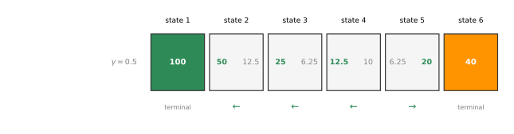
State-Action Value Function
machine-learning
unsupervised-learning
The state-action value function Q(s,a), picking optimal actions from it, the Bellman equation, and stochastic environments, with a Mars rover lab.
The previous page set up the reinforcement learning problem, states, actions, rewards, the discounted return, policies, and the Markov decision process, all on the six-state Mars rover example. When reinforcement learning algorithms get developed in a later section, there is a key quantity they will try to compute, called the state-action value function. This page defines that function, shows how it immediately gives a way to pick good actions, and then introduces what is probably the single most important equation in reinforcement learning, the Bellman equation.
State-Action Value Function
The state-action value function is a function typically denoted by the uppercase letter \(Q\). It is a function of a state \(s\) you might be in, as well as an action \(a\) you might choose to take in that state, and \(Q(s, a)\) gives a number equal to the return if you
- start in state \(s\),
- take the action \(a\) once, and
- behave optimally after that, meaning after that first action you take whatever actions result in the highest possible return.
Because it is almost always denoted by \(Q\), the state-action value function is also often called the Q function, and the two terms are used interchangeably. It tells you how good it is to take action \(a\) in state \(s\) and then behave optimally afterward.
NoteSlightly circular, on purpose
There is something a little strange about this definition. It assumes optimal behavior after the first action, but if the optimal behavior were already known, there would be no need to compute \(Q(s, a)\) in the first place, because the optimal policy would already be in hand. Rest assured, the specific reinforcement learning algorithms in a later section resolve this slightly circular definition, and they come up with a way to compute the Q function even before the optimal policy has been found. Do not worry about it for now.
Q Values on the Mars Rover
The previous page found that a pretty good policy for the Mars rover is to go left from states 2, 3, and 4, and go right from state 5. It turns out this is actually the optimal policy when the discount factor is \(\gamma = 0.5\), so “behave optimally after that” means taking actions according to this policy.
Take \(Q(2, \rightarrow)\), state 2 with the action go right. From state 2, going right leads to state 3. Behaving optimally after that means going left from state 3, back through state 2, and on to the reward of \(100\). The rewards along the way are \(0\) (state 2), \(0\) (state 3), \(0\) (state 2 again), and \(100\) (state 1), so \[Q(2, \rightarrow) = 0 + (0.5)(0) + (0.5)^2(0) + (0.5)^3(100) = 12.5\]
Note that this passes no judgment on whether going right from state 2 is a good idea. It is actually not that good an idea, but \(Q(s, a)\) just faithfully reports the return if you take that action and then behave optimally afterward.
Two more examples. In state 2, going left reaches the terminal state immediately, with rewards \(0\) then \(100\), so \[Q(2, \leftarrow) = 0 + (0.5)(100) = 50\]
And from state 4, going left gives rewards \(0\), \(0\), \(0\), then \(100\), so \[Q(4, \leftarrow) = 0 + (0.5)(0) + (0.5)^2(0) + (0.5)^3(100) = 12.5\]
Carrying out this exercise for every state and both actions fills in the whole picture. In each middle state the left number is \(Q(s, \leftarrow)\) and the right number is \(Q(s, \rightarrow)\), with green marking the larger of the two. At the terminal states it does not matter what you do, you just collect the terminal reward, \(100\) or \(40\).
Picking Actions with the Q Function
Once the Q function can be computed, it gives a way to pick actions as well. Looking at the values above, one interesting pattern stands out. In state 2, the action left gives \(Q = 50\), which is the best possible return available from that state. In states 3 and 4, left again gives the higher value, and in state 5 it is the action right that gives the higher return of \(20\).
The best possible return from any state \(s\) is the largest value of \(Q(s, a)\), maximizing over the actions \[\max_{a} Q(s, a)\]
To make this concrete, state 4 has \(Q(4, \leftarrow) = 12.5\) and \(Q(4, \rightarrow) = 10\). The larger of these two values, \(12.5\), is the highest return you can hope for starting from state 4. Moreover, if the rover should enjoy that return of \(12.5\) rather than \(10\), the action to take is the one delivering the larger Q value. The best possible action in state \(s\) is the action \(a\) that maximizes \(Q(s, a)\), so the optimal policy can be written \[\pi(s) = \arg\max_{a} Q(s, a)\]
This is the hint for why computing \(Q(s, a)\) matters so much for the reinforcement learning algorithms built later. Given a way to compute \(Q(s, a)\) for every state and every action, being in some state \(s\) only requires looking at the available actions and picking the one that maximizes \(Q(s, a)\). The intuition also makes sense from the definition. \(Q(s, a)\) is the return from taking action \(a\) in state \(s\) and then behaving optimally, so to earn the biggest possible return, take the action that results in the biggest total return.
NoteQ* and the optimal Q function
The reinforcement learning literature sometimes writes this function as \(Q^*\) and calls it the optimal Q function. Those terms refer to exactly the Q function defined here, so reading about \(Q^*\) elsewhere just means the state-action value function from this page. Nothing more is needed for this course.
Review Questions
1. What three things define the value \(Q(s, a)\)?
TipAnswer
\(Q(s, a)\) is the return obtained by starting in state \(s\), taking the action \(a\) once, and then behaving optimally after that, meaning every action after the first is chosen to produce the highest possible return.
1. Why does the definition of the Q function sound circular, and why is that not a problem in practice?
TipAnswer
The definition assumes optimal behavior after the first action, yet knowing the optimal behavior everywhere would already be the optimal policy, which is the very thing being sought. It is not a problem because later reinforcement learning algorithms provide a way to compute \(Q(s, a)\) without knowing the optimal policy in advance, resolving the circularity.
1. With \(\gamma = 0.5\), verify that \(Q(2, \rightarrow) = 12.5\) by listing the rewards along the way.
TipAnswer
Going right from state 2 reaches state 3, and behaving optimally afterward goes left through state 2 to state 1. The rewards are \(0, 0, 0, 100\), so the return is \(0 + (0.5)(0) + (0.5)^2(0) + (0.5)^3(100) = 12.5\).
1. Given the Q function, how do you read off the best possible return from a state, and the best action to take there?
TipAnswer
The best possible return from state \(s\) is \(\max_a Q(s, a)\), the larger of the Q values available in that state. The best action is the \(a\) achieving that maximum, so the optimal policy is \(\pi(s) = \arg\max_a Q(s, a)\).
1. Which of the following accurately describes the state-action value function \(Q(s, a)\)?
It is the return if you start from state \(s\), take action \(a\) (once), then behave optimally after that.
It is the return if you start from state \(s\) and repeatedly take action \(a\).
It is the return if you start from state \(s\) and behave optimally.
It is the immediate reward if you start from state \(s\) and take action \(a\) (once).
TipAnswer
a. The definition has all three parts, start in state \(s\), take the action \(a\) once, and behave optimally from then on. Option b keeps repeating \(a\) instead of switching to optimal behavior, option c ignores the first action \(a\) entirely (that would be the best possible return \(\max_a Q(s,a)\), not \(Q(s,a)\) itself), and option d is only the immediate reward \(R(s)\), missing all the discounted future rewards.
1. You are controlling a robot that has 3 actions, \(\leftarrow\) (left), \(\rightarrow\) (right) and STOP. From a given state \(s\), you have computed \(Q(s, \leftarrow) = -10\), \(Q(s, \rightarrow) = -20\), \(Q(s, \text{STOP}) = 0\). What is the optimal action to take in state \(s\)?
STOP
\(\leftarrow\) (left)
\(\rightarrow\) (right)
Impossible to tell
TipAnswer
a. The optimal action is the one that maximizes \(Q(s, a)\), and \(0\) is the greatest of the three values, larger than \(-10\) and \(-20\). Negative Q values are perfectly fine, the maximization works the same way.
Lab: Mars Rover Q Values
To keep building intuition about how the values of \(Q(s, a)\) change depending on the problem, the course provides an optional lab, a Jupyter notebook that lets you modify the Mars rover example and see for yourself how \(Q(s, a)\) changes. This section reproduces it. The notebook starts by running its helper functions, and you are not expected to understand that code yet, since a later section develops the learning algorithm that estimates \(Q(s, a)\).
NoteHelper functions used in this lab
The notebook does from utils import * to load these helpers, which compute the optimal policy and the Q values for a given configuration and draw the two diagrams. They are reproduced and run here so the cells below match the notebook cell for cell.
import numpy as np
import matplotlib.pyplot as plt
def generate_rewards(num_states, each_step_reward, terminal_left_reward, terminal_right_reward):
rewards = [each_step_reward] * num_states
rewards[0] = terminal_left_reward
rewards[-1] = terminal_right_reward
return rewards
def generate_transition_prob(num_states, num_actions, misstep_prob = 0):
# 0 is left, 1 is right
p = np.zeros((num_states, num_actions, num_states))
for i in range(num_states):
if i != 0:
p[i, 0, i-1] = 1 - misstep_prob
p[i, 1, i-1] = misstep_prob
if i != num_states - 1:
p[i, 1, i+1] = 1 - misstep_prob
p[i, 0, i+1] = misstep_prob
# Terminal States
p[0] = np.zeros((num_actions, num_states))
p[-1] = np.zeros((num_actions, num_states))
return p
def calculate_Q_value(num_states, rewards, transition_prob, gamma, V_states, state, action):
q_sa = rewards[state] + gamma * sum([transition_prob[state, action, sp] * V_states[sp] for sp in range(num_states)])
return q_sa
def evaluate_policy(num_states, rewards, transition_prob, gamma, policy):
max_policy_eval = 10000
threshold = 1e-10
V = np.zeros(num_states)
for i in range(max_policy_eval):
delta = 0
for s in range(num_states):
v = V[s]
V[s] = calculate_Q_value(num_states, rewards, transition_prob, gamma, V, s, policy[s])
delta = max(delta, abs(v - V[s]))
if delta < threshold:
break
return V
def improve_policy(num_states, num_actions, rewards, transition_prob, gamma, V, policy):
policy_stable = True
for s in range(num_states):
q_best = V[s]
for a in range(num_actions):
q_sa = calculate_Q_value(num_states, rewards, transition_prob, gamma, V, s, a)
if q_sa > q_best and policy[s] != a:
policy[s] = a
q_best = q_sa
policy_stable = False
return policy, policy_stable
def get_optimal_policy(num_states, num_actions, rewards, transition_prob, gamma):
optimal_policy = np.zeros(num_states, dtype=int)
max_policy_iter = 10000
for i in range(max_policy_iter):
policy_stable = True
V = evaluate_policy(num_states, rewards, transition_prob, gamma, optimal_policy)
optimal_policy, policy_stable = improve_policy(num_states, num_actions, rewards, transition_prob, gamma, V, optimal_policy)
if policy_stable:
break
return optimal_policy, V
def calculate_Q_values(num_states, rewards, transition_prob, gamma, optimal_policy):
# Left and then optimal policy
q_left_star = np.zeros(num_states)
# Right and optimal policy
q_right_star = np.zeros(num_states)
V_star = evaluate_policy(num_states, rewards, transition_prob, gamma, optimal_policy)
for s in range(num_states):
q_left_star[s] = calculate_Q_value(num_states, rewards, transition_prob, gamma, V_star, s, 0)
q_right_star[s] = calculate_Q_value(num_states, rewards, transition_prob, gamma, V_star, s, 1)
return q_left_star, q_right_star
def plot_optimal_policy_return(num_states, optimal_policy, rewards, V):
actions = [r"$\leftarrow$" if a == 0 else r"$\rightarrow$" for a in optimal_policy]
actions[0] = ""
actions[-1] = ""
fig, ax = plt.subplots(figsize=(2*num_states,2))
for i in range(num_states):
ax.text(i+0.5, 0.5, actions[i], fontsize=32, ha="center", va="center", color="orange")
ax.text(i+0.5, 0.25, rewards[i], fontsize=16, ha="center", va="center", color="black")
ax.text(i+0.5, 0.75, round(V[i],2), fontsize=16, ha="center", va="center", color="firebrick")
ax.axvline(i, color="black")
ax.set_xlim([0, num_states])
ax.set_ylim([0, 1])
ax.set_xticklabels([])
ax.set_yticklabels([])
ax.tick_params(axis='both', which='both', length=0)
ax.set_title("Optimal policy",fontsize = 16)
def plot_q_values(num_states, q_left_star, q_right_star, rewards):
fig, ax = plt.subplots(figsize=(3*num_states,2))
for i in range(num_states):
ax.text(i+0.2, 0.6, round(q_left_star[i],2), fontsize=16, ha="center", va="center", color="firebrick")
ax.text(i+0.8, 0.6, round(q_right_star[i],2), fontsize=16, ha="center", va="center", color="firebrick")
ax.text(i+0.5, 0.25, rewards[i], fontsize=20, ha="center", va="center", color="black")
ax.axvline(i, color="black")
ax.set_xlim([0, num_states])
ax.set_ylim([0, 1])
ax.set_xticklabels([])
ax.set_yticklabels([])
ax.tick_params(axis='both', which='both', length=0)
ax.set_title("Q(s,a)",fontsize = 16)
def generate_visualization(terminal_left_reward, terminal_right_reward, each_step_reward, gamma, misstep_prob):
num_states = 6
num_actions = 2
rewards = generate_rewards(num_states, each_step_reward, terminal_left_reward, terminal_right_reward)
transition_prob = generate_transition_prob(num_states, num_actions, misstep_prob)
optimal_policy, V = get_optimal_policy(num_states, num_actions, rewards, transition_prob, gamma)
q_left_star, q_right_star = calculate_Q_values(num_states, rewards, transition_prob, gamma, optimal_policy)
plot_optimal_policy_return(num_states, optimal_policy, rewards, V)
plot_q_values(num_states, q_left_star, q_right_star, rewards)The first configuration cell specifies six states and two actions. These stay fixed, so do not change them.
# Do not modify
num_states = 6
num_actions = 2The next cell specifies the terminal left and terminal right rewards, \(100\) and \(40\), with \(0\) as the reward of the intermediate states, and the discount factor \(\gamma = 0.5\). Ignore the misstep probability for now, it becomes important in the stochastic section below.
terminal_left_reward = 100
terminal_right_reward = 40
each_step_reward = 0
# Discount factor
gamma = 0.5
# Probability of going in the wrong direction
misstep_prob = 0With these values, running the visualization computes both the optimal policy and the Q function \(Q(s, a)\). The top panel shows the best possible return from each state with the optimal action as an arrow, the bottom panel shows both Q values per state, and the black number in each box is that state’s reward. The values match the diagram in the lecture section above, \(50\) and \(12.5\) in state 2, down to \(6.25\) and \(20\) in state 5.
generate_visualization(terminal_left_reward, terminal_right_reward, each_step_reward, gamma, misstep_prob)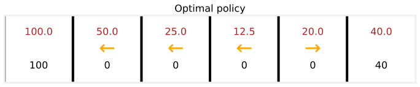
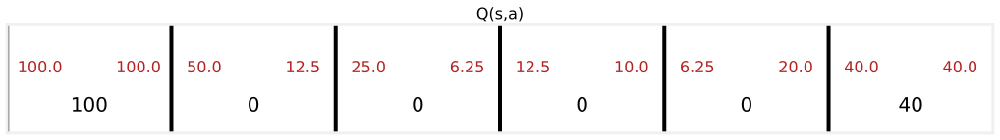
Now here is where the fun starts, changing some of the values and seeing how things change.
Smaller terminal right reward. Update the terminal right reward to a much smaller value, say only \(10\), and rerun.
terminal_right_reward = 10
generate_visualization(terminal_left_reward, terminal_right_reward, each_step_reward, gamma, misstep_prob)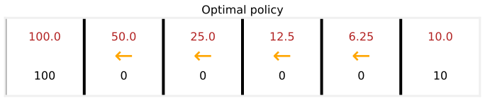
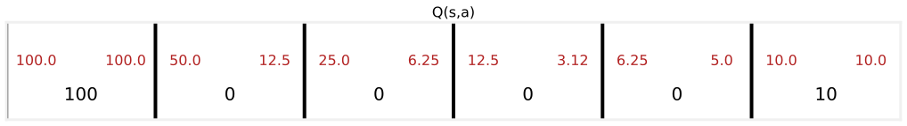
Look at how \(Q(s, a)\) changes. In state 5, going left and behaving optimally now earns \(6.25\), whereas going right earns a return of only \(5\). With the reward at the right so small, even standing right next to it, the rover would rather go left all the way, and in fact the optimal policy is now to go left from every single state.
A more patient rover. Change the terminal right reward back to \(40\), but raise the discount factor to \(\gamma = 0.9\), much closer to \(1\).
terminal_right_reward = 40
gamma = 0.9
generate_visualization(terminal_left_reward, terminal_right_reward, each_step_reward, gamma, misstep_prob)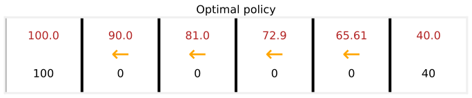
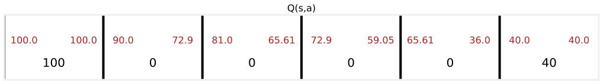
This makes the Mars rover less impatient. It is willing to take longer to hold out for a higher reward, because rewards in the future are multiplied by \(0.9\) raised to some power rather than \(0.5\) raised to some power, and so are not discounted as heavily. In state 5, going left now gives the higher value \(65.61\) compared to \(36\) for going right. Notice, by the way, that \(36\) is exactly \(0.9\) times the terminal reward of \(40\), so these numbers make sense. Even in state 5, the patient rover walks all the way to the left.
A very impatient rover. Now change \(\gamma\) to a much smaller number, \(0.3\), which very heavily discounts rewards in the future.
gamma = 0.3
generate_visualization(terminal_left_reward, terminal_right_reward, each_step_reward, gamma, misstep_prob)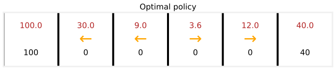
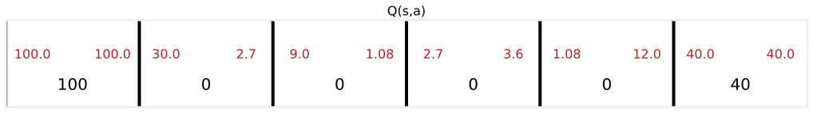
The behavior changes again. In state 4, the rover no longer has the patience to go for the larger \(100\) reward. Because \(\gamma\) is so small, it would rather go for the reward of \(40\), a much smaller reward but closer by.
Playing with these numbers, the reward function and the discount factor, and rerunning shows how the values of \(Q(s, a)\) change, how the optimal return from each state (the larger of the two Q values) changes, and how the optimal policy changes with them. Doing this yourself in the optional lab is the best way to sharpen intuition about how these quantities respond to the rewards and the discount factor in a reinforcement learning application.
Review Questions
1. When the terminal right reward drops from \(40\) to \(10\), what happens to the optimal policy, and why?
TipAnswer
The optimal policy becomes go left from every state. Even from state 5, right next to the right terminal, going right is worth only \(0.5 \times 10 = 5\), while going left and collecting the \(100\) eventually is worth \(6.25\), so the small prize is no longer worth grabbing even when it is one step away.
1. Why does raising \(\gamma\) from \(0.5\) to \(0.9\) make the rover “more patient”?
TipAnswer
With \(\gamma = 0.9\), rewards several steps away are multiplied by \(0.9\) raised to some power instead of \(0.5\) raised to some power, so they keep much more of their value. Waiting longer for the bigger \(100\) reward costs relatively little, which is why even state 5 prefers the long walk left (\(65.61\)) over the quick \(36\) from going right.
1. With \(\gamma = 0.3\), which state changes its preferred action compared to \(\gamma = 0.5\), and what does that illustrate?
TipAnswer
State 4 switches from going left to going right. Heavy discounting makes the far-away \(100\) nearly worthless by the time the rover could reach it, so the closer \(40\) wins. It illustrates that the optimal policy depends not just on the rewards but on how heavily the future is discounted.
Bellman Equation
To summarize where things stand, computing the state-action value function \(Q(s, a)\) gives a way to pick a good action from every state, just pick the action \(a\) with the largest \(Q(s, a)\). The question is how to compute these values. In reinforcement learning, a key equation called the Bellman equation helps compute the state-action value function.
The notation, gathered in one place, is
- \(s\) = the current state.
- \(R(s)\) = the reward of the current state. In the Mars rover MDP, \(R(1) = 100\), \(R(2) = 0, \dots, R(6) = 40\).
- \(a\) = the current action, the action taken in state \(s\).
- \(s'\) = the state reached after taking action \(a\) from \(s\). For example, going left from state 4 gives \(s' = 3\).
- \(a'\) = an action that might be taken in the new state \(s'\).
The convention is that \(s, a\) are the current state and action, and adding the prime marks the next state and next action. With that notation, the Bellman equation says \[Q(s, a) = R(s) + \gamma \max_{a'} Q(s', a')\]
The return equals \(R(s)\), the reward for being in the current state, plus the discount factor \(\gamma\) times the maximum over all possible actions \(a'\) of \(Q(s', a')\), evaluated at the new state \(s'\). There is a lot going on in this equation, so first some examples, then the reason it makes sense.
Checking the Bellman Equation on the Rover
Apply it to \(Q(2, \rightarrow)\). The current state is 2 and the action is go right, so the next state is \(s' = 3\). The Bellman equation says \[Q(2, \rightarrow) = R(2) + 0.5 \max_{a'} Q(3, a') = 0 + 0.5 \max(25, 6.25) = 0.5 \times 25 = 12.5\] which fortunately matches the value found from the definition earlier.
One more, \(Q(4, \leftarrow)\). The current state is 4, the action is go left, and the next state is again \(s' = 3\), so \[Q(4, \leftarrow) = R(4) + 0.5 \max_{a'} Q(3, a') = 0 + 0.5 \times 25 = 12.5\] also matching the earlier calculation.
One note. In a terminal state there is no next state \(s'\), so the second term goes away and the Bellman equation simplifies to \[Q(s, a) = R(s)\] which is why \(Q(s, a)\) at the terminal states is just \(100\) or \(40\). Feel free to apply the Bellman equation to any other state and action in this MDP and check that the math works out.
Why the Bellman Equation Makes Sense
Starting from state \(s\), taking action \(a\), and acting optimally after that produces some sequence of rewards over time, and the return is \[R_1 + \gamma R_2 + \gamma^2 R_3 + \gamma^3 R_4 + \dots\] continuing until the terminal state. The Bellman equation says this discounted sequence can be broken down into exactly two components.
- The immediate reward. \(R(s)\), which is \(R_1\), is the reward you get right away, before any discounting. The reinforcement learning literature sometimes calls this the immediate reward.
- \(\gamma\) times the best return from the next state. After taking action \(a\) you land in \(s'\), and the definition of \(Q(s, a)\) assumes optimal behavior from there on. Behaving optimally starting from \(s'\) earns the best possible return from \(s'\), which was shown earlier to be \(\max_{a'} Q(s', a')\).
The factoring step makes this visible. Pulling one \(\gamma\) out of every term after the first, \[R_1 + \gamma R_2 + \gamma^2 R_3 + \gamma^3 R_4 + \dots = R_1 + \gamma \left( R_2 + \gamma R_3 + \gamma^2 R_4 + \dots \right)\] and the quantity in parentheses is exactly the sequence of rewards seen when starting from \(s'\), so under optimal behavior it equals \(\max_{a'} Q(s', a')\). The total return from the current state is the reward you get right away plus \(\gamma\) times the return you get starting from the next state. That is the essence of the Bellman equation.
Relating this back to the earlier example, \(Q(4, \leftarrow)\) is the total return for starting in state 4 and going left, with rewards \(0, 0, 0, 100\) and return \(12.5\). The Bellman equation breaks this into the \(0\) that is \(R(4)\), plus \(0.5\) times the sequence \(0 + (0.5)(0) + (0.5)^2(100)\), and that inner sequence is precisely the optimal return from the next state, \(\max_{a'} Q(3, a') = 25\). So \(Q(4, \leftarrow) = R(4) + 0.5 \times 25 = 12.5\).
If the full breakdown does not entirely land yet, that is okay. Applying the equation mechanically still gives the right results, and the high-level intuition worth keeping is that the total return has two parts, the reward received right away, plus \(\gamma\) times the return from the next state.
Review Questions
1. Write the Bellman equation and name what each of \(R(s)\), \(\gamma\), \(s'\), and \(a'\) stands for.
TipAnswer
\[Q(s, a) = R(s) + \gamma \max_{a'} Q(s', a')\] \(R(s)\) is the reward of the current state (the immediate reward), \(\gamma\) is the discount factor, \(s'\) is the state reached after taking action \(a\) from state \(s\), and \(a'\) ranges over the actions available in \(s'\), with the max picking the best of them.
1. Use the Bellman equation to compute \(Q(5, \leftarrow)\) in the Mars rover MDP with \(\gamma = 0.5\), given \(Q(4, \leftarrow) = 12.5\) and \(Q(4, \rightarrow) = 10\).
TipAnswer
Going left from state 5 lands in \(s' = 4\), so \[Q(5, \leftarrow) = R(5) + 0.5 \max_{a'} Q(4, a') = 0 + 0.5 \max(12.5, 10) = 0.5 \times 12.5 = 6.25\] matching the value in the Q diagram.
1. How does the Bellman equation simplify at a terminal state, and why?
TipAnswer
It becomes \(Q(s, a) = R(s)\). A terminal state has no next state \(s'\), so the second term \(\gamma \max_{a'} Q(s', a')\) goes away, leaving only the terminal reward, \(100\) or \(40\) in the rover example.
1. In words, what two components does the Bellman equation split the return into?
TipAnswer
The reward received right away in the current state, the immediate reward \(R(s)\), plus the discount factor \(\gamma\) times the best possible return from the next state \(s'\), which is \(\max_{a'} Q(s', a')\). Together these equal the total return from the current state.
Stochastic Environments (Optional)
In some applications, taking an action does not have a completely reliable outcome. Commanding the Mars rover to go left might run into a little rock slide, or a really slippery patch of ground, so it slips and goes in the wrong direction. In practice, many robots do not always do exactly what they are told, because of wind blowing them off course, wheels slipping, or something else. There is a generalization of the reinforcement learning framework seen so far that models such random, or stochastic, environments.
Continuing the Mars rover example, say the command go left succeeds most of the time, with probability \(0.9\), but \(0.1\) of the time the rover accidentally slips and heads in the opposite direction. From state 4, commanding left means a \(0.9\) chance of ending up in state 3 and a \(0.1\) chance of ending up in state 5. Conversely, commanding right gives a \(0.9\) chance of reaching state 5 and a \(0.1\) chance of reaching state 3.
Expected Return
With the policy from before, go left from states 2, 3, 4 and go right from state 5, the actual sequence of states visited becomes random. Starting from state 4 and following the policy, one lucky run might step left three times in a row and produce the reward sequence \(0, 0, 0, 100\). A less lucky run might slip once in state 3, bounce back to state 4, and only then work its way left, producing \(0, 0, 0, 0, 0, 100\) with more discounting along the way. It is even possible to slip on the very first step, end up in state 5, and then go right to the terminal, producing \(0, 0, 40\).
Because there is no single sequence of rewards that occurs for sure, maximizing “the return” is no longer the right goal, since the return is now a random number. What a stochastic reinforcement learning problem is interested in instead is maximizing the average value of the sum of discounted rewards. Averaging means running the policy very many times, a thousand, a hundred thousand, a million tries, collecting all the different reward sequences, and averaging the resulting returns. This average is called the expected return, and in statistics the term expected is just another way of saying average. The notation is \[\text{Expected return} = \mathbb{E}\left[ R_1 + \gamma R_2 + \gamma^2 R_3 + \dots \right]\] where \(\mathbb{E}\) stands for the expected value. The job of a reinforcement learning algorithm in a stochastic MDP is to choose a policy \(\pi\) that maximizes this expected sum of discounted rewards.
Bellman Equation in the Stochastic Case
This changes the Bellman equation in one small way. After taking action \(a\) in state \(s\), the next state \(s'\) is now random. In state 3, commanding left might land in state 2 or in state 4. So an expected value operator wraps the future term \[Q(s, a) = R(s) + \gamma \, \underbrace{\mathbb{E}\left[ \max_{a'} Q(s', a') \right]}_{\substack{\text{what you expect to get, on average,} \\ \text{from the future returns}}}\]
The total return from taking action \(a\) in state \(s\) and behaving optimally afterward equals the immediate reward, plus the discount factor times what you expect to get, on average, from the future returns.
Misstep Probability in the Lab
To sharpen intuition about what happens in these stochastic reinforcement learning problems, go back to the optional lab from earlier on this page, where the misstep_prob parameter is the probability of the Mars rover going in the opposite direction from the one commanded. Setting it to \(0.1\) (with the original rewards and \(\gamma = 0.5\) restored) and re-executing the notebook computes the optimal expected returns and the Q values for this stochastic MDP.
gamma = 0.5
misstep_prob = 0.1
generate_visualization(terminal_left_reward, terminal_right_reward, each_step_reward, gamma, misstep_prob)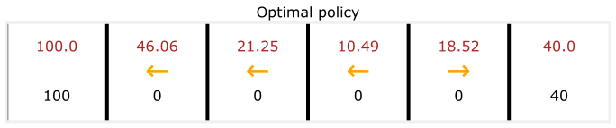
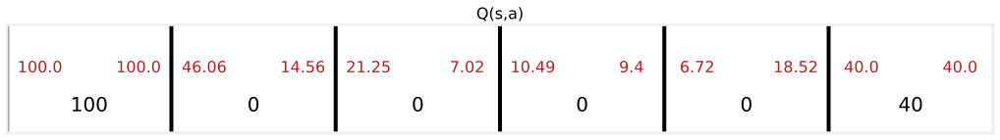
Notice that these values are now a little bit lower than in the deterministic case, because the robot cannot be controlled as well as before, so the Q values and the optimal returns have gone down a bit. Increasing the misstep probability to \(0.4\), where the rover goes in the commanded direction only \(60\) percent of the time, makes the values end up even lower, since the degree of control over the robot has decreased again.
misstep_prob = 0.4
generate_visualization(terminal_left_reward, terminal_right_reward, each_step_reward, gamma, misstep_prob)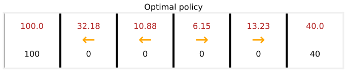
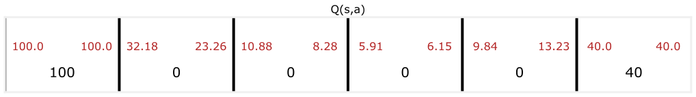
Changing the misstep probability in the lab and watching the optimal expected return and the Q values respond is, once more, a good way to sharpen intuition.
Everything so far has used this Markov decision process with just six states. For many practical applications, the number of states is much larger, and the next part of the course generalizes this framework to much richer problems, in particular with continuous state spaces.
Review Questions
1. What does the misstep probability model, and what does a value of \(0.1\) mean for the go-left command?
TipAnswer
It models a stochastic environment where actions do not always have their intended effect, such as wheels slipping or wind. With misstep probability \(0.1\), commanding left moves the rover left with probability \(0.9\) and accidentally in the opposite direction with probability \(0.1\).
1. Why is the goal in a stochastic MDP to maximize the expected return rather than the return?
TipAnswer
Because the sequence of states, and therefore the sum of discounted rewards, is random, a single return value is not guaranteed. Running the same policy twice can produce different reward sequences. The meaningful quantity to maximize is the average of the discounted-reward sums over very many runs, the expected return \(\mathbb{E}[R_1 + \gamma R_2 + \gamma^2 R_3 + \dots]\).
1. How does the Bellman equation change in the stochastic case, and why?
TipAnswer
The future term gets wrapped in an expected value, \[Q(s, a) = R(s) + \gamma \, \mathbb{E}\left[ \max_{a'} Q(s', a') \right]\] because the next state \(s'\) reached after taking action \(a\) is now random, so the best future return must be averaged over the possible next states.
1. What happens to the Q values as the misstep probability increases, and what is the intuition?
TipAnswer
They decrease. With more slipping, the rover wastes more discounted steps heading the wrong way, and commands provide less control over where it actually goes, so the best achievable expected return from every state shrinks.